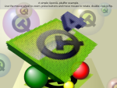

OpenGL Examples from the Qt OpenGL module

These examples describe how to use the Qt OpenGL module. For new code, please use the OpenGL classes in the Qt GUI module.
Qt provides support for integration with OpenGL implementations on all platforms, giving developers the opportunity to display hardware accelerated 3D graphics alongside a more conventional user interface.
These examples demonstrate the basic techniques used to take advantage of OpenGL in Qt applications.
The 2D Painting example shows how QPainter and QGLWidget can be used together to display accelerated 2D graphics on supported hardware. | |
The Cube OpenGL ES 2.0 example shows how to write mouse rotateable textured 3D cube using OpenGL ES 2.0 with Qt. It shows how to handle polygon geometries efficiently and how to write simple vertex and fragment shader for programmable graphics pipeline. In addition it shows how to use quaternions for representing 3D object orientation. | |
The Hello GL2 example demonstrates the basic use of the OpenGL-related classes provided with Qt. | |
The Hello GLES3 example demonstrates easy, cross-platform usage of OpenGL ES 3.0 functions via QOpenGLExtraFunctions in an application that works identically on desktop platforms with OpenGL 3.3 and mobile/embedded devices with OpenGL ES 3.0. | |
The Textures example demonstrates the use of Qt's image classes as textures in applications that use both OpenGL and Qt to display graphics. |